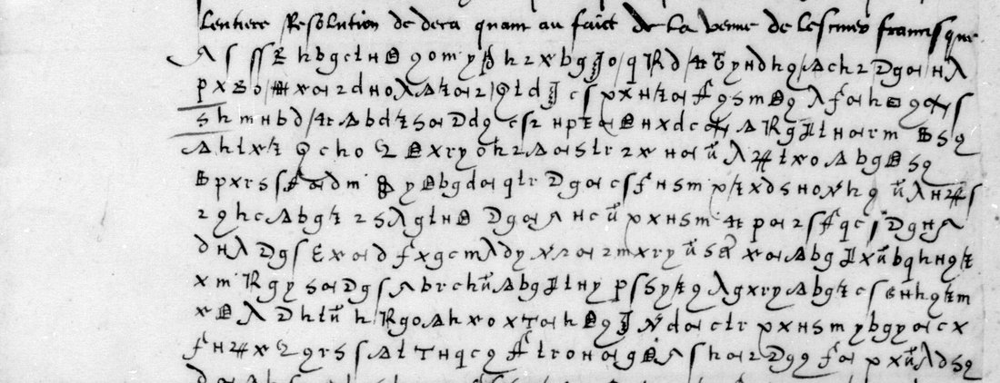

At a glanceKnown key applied, partial · about 85 % of the cipher
- The letter
- Gabriel, cardinal de Gramont (bishop of Tarbes), to Anne de Montmorency, Rome, 21 July [1530]. Clear opening and close around fourteen lines of cipher.
- Where
- Bibliothèque nationale de France, fr. 3071 no. 7, f. 17 (Gallica btv1b9060315f, view 30). One of the four letters of catalogue item 6.
- The cipher
- Lasry’s “Gramont’s cipher (1530)”: substitution on graphic signs with two to seven homophones per letter, signs for LL, RR, SS, COM and CON, and five signs his table leaves unknown.
- How it was deciphered
- Lasry’s 2023 table for this leaf, with Tomokiyo’s partial table from the sibling fr. 3019 f. 20, applied by eye from line strips; three unknown signs identified from context.
- What it says
- The Pope sends “Francisque” rather than Gramont, for fear of Imperial suspicion; the bishop of Faenza is to go to congratulate the King on “la venue de la royne et de messeigneurs”.
- Still open
- The ends of the first two cipher lines and the middle of lines 5–7, about 15 %, and two of the table’s unknown signs.
- Credit
- George Lasry recovered the key and deciphered the letter in 2023; his decipherment was not published.
01 The letter and its key
The catalogue grouped this letter with three others to Montmorency (catalogue item 6). Each of the four is in its own key, and since 14 October 2026 each key has its own page: Langeac at Venice in 1529 (Avranches’ cipher 1), Gramont’s own letter of 1529 (Gramont’s cipher, 1529), and the cardinal de Mâcon in 1537 with his other letters in Mascon’s cipher. Each is a different cipher, with its own page. By July 1530 Gramont is a cardinal, and he uses a new key.
The key is George Lasry’s table for this very leaf, “Gramont’s cipher (1530)”, posted on Satoshi Tomokiyo’s cryptiana with his other tables of November 2023; Tomokiyo had a partial table of the same key from fr. 3019 f. 20, and the key also serves fr. 3040 ff. 12 and 18. Lasry deciphered this letter in 2023 (personal communication, 21 September 2026), but neither site gives any plaintext. Lasry lists five signs as unknown. Three are identified from this letter: 8Δ is pape (“de la part du 8Δ”, “8Δ trouvé bon”), the key-ring sign is roy (“congratuler avec le ⚷ de la venue de la royne”), and ʃʃ on a stem at the head of a word is a null. The sign g serves for B, V and E, and only context decides.
02 Gramont, Rome, 21 July 1530: the princes come home

The clear opening thanks Montmorency for “la bonne nouvelle”, so great that everyone takes hope of things being restored, and promises a full account “dedans trois ou quatre jours par homme exprès” of the decision on Francisque’s coming. The cipher, in capitals, with gaps in brackets:
… VOVLOIR EST TOVSIOVRS BON ET CONTINVE PLVS QVE IAMAIS […]CVTION. ET POVRCE QVE LE[…] QVE LES IMPERIAVLX POVRROIENT RECEPVOIR PLVS GRANT SVSPECON SI IE Y ALLOIS, POVRCE […] COMMANCEMENT [LE PAPE] A TROVVE BON QVE LEDICT FRANCISQVE Y AILLE […] QV’IL N’Y A QVE BIEN; D’AVLTANT [QV’]ESTANT ICI IE POVRRAY OBVIER A TOVT CE QVE L’ON LVY POVRROIT MECTRE AVANT POVR LE DIVERTIR. A QVOY VOVS PVIS ASSEVRER QVE L’ON FAICT TOVTE LA DILLIGENCE POSSIBLE. MONSIEVR L’EVESQVE DE FAIANCE, NEPVEV DV CONTE DE CARPI, PARTIRA DEDANS TROIS OV QVATRE IOVRS POVR, DE LA PART DV [PAPE], […] CONGRATVLER AVEC LE [ROY] DE LA VENVE DE LA ROYNE ET DE MESSEIGNEVRS.
In modern terms: the Pope’s goodwill is unchanged and stronger than ever. Because the Imperials could grow more suspicious if Gramont went himself, the Pope thought it best from the start that Francisque should go, and Gramont thinks it all to the good, since by staying in Rome he can counter whatever is put to the Pope to turn him. The bishop of Faenza, nephew of the count of Carpi, will leave in three or four days to congratulate the King, on the Pope’s behalf, on the coming of the Queen and the princes.
The Dauphin and Henri, hostages in Spain since 1526, were handed back with Queen Eleanor on the Bidassoa on 1 July 1530. That dates the letter, and the “bonne nouvelle” of the clear opening is the same event. The nuncio is Rodolfo Pio, bishop of Faenza, nephew of Alberto Pio, count of Carpi, who did go to France in the summer of 1530. Gramont, a cardinal since June 1530, is in Rome. The matter of Francisque’s mission (a marriage, or the Pope’s meeting with the King) is not named in the cipher deciphered so far.
03 What remains uncertain
- The ends of the first two cipher lines and the middle of lines 5–7 were deciphered at lower confidence: about 15 % of the cipher. These stretches carry signs the table leaves unknown and the ambiguous g, and no gloss, clear copy or decipherment of the letter exists.
- Two of Lasry’s five unknown signs still have no value. Another letter in this key, Gramont to Villandry (fr. 2980 nos. 21–22, catalogue 328), is still open and could fix them.
- The figure of 85 % is an estimate from the reading; no sign-by-sign alias file was kept for this letter. A glyph-level transcription of the leaf is the next step.
04 Sources
- BnF, Français 3071, f. 17: Gallica btv1b9060315f, view 30.
- G. Lasry, key table “Gramont’s cipher (1530)” for BnF fr. 3071 f. 17 (November 2023), on S. Tomokiyo’s cryptiana, “George Lasry’s codebreaking”.
- S. Tomokiyo, “French Ciphers during the Reign of Francis I”: the partial table from fr. 3019 f. 20.
The reading, Lasry’s and Tomokiyo’s tables and the notes are in the repository (targets/gramont1530/); the Gallica tools are in targets/gramont1529/. Page images are not committed.